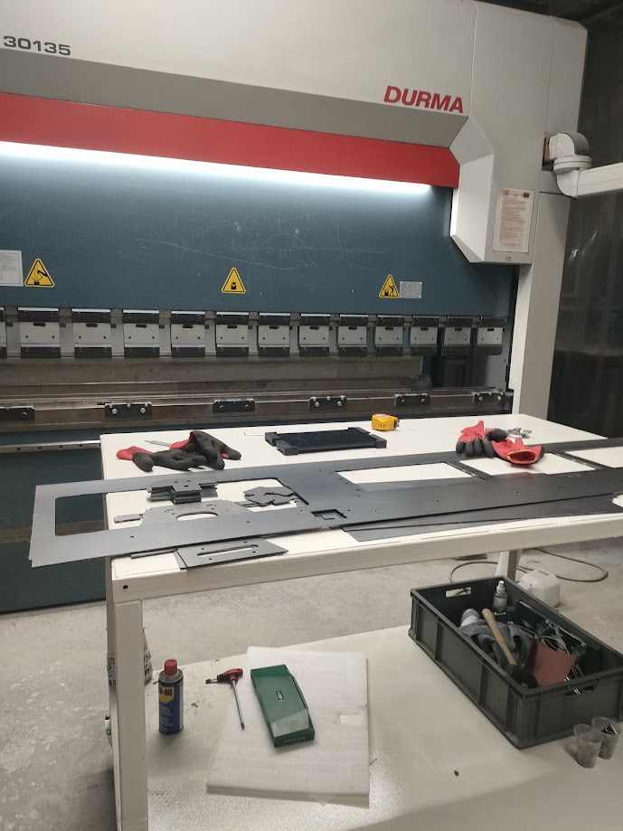
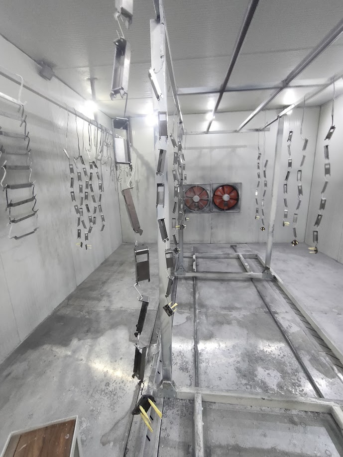

Staj Günlüğüm (Sayfa 1)
1. Gün:
Tarih: 9 Şubat Pazartesi 2026

Bugün stajın ilk günü, pek bir iş yapmadım, elektrikli şarj istasyonlarının parçalarının toplanmasına yani montajına yardımcı oldum.
2. Gün:
Tarih: 10 Şubat Salı 2026

telefon kullanımımız yasak oldugu için fotoğraf yok. alet takımlarını öğrendim ve tanıdım aynı şekilde parçaların montajına yardım ettim.
3. Gün:
Tarih: 11 Şubat Çarşamba 2026

Bugün abkant büküm makinesi ile düz olan parçaları tek tek büküp sarj istasyonunun parçaları haline getirdik, ustam bükerken bende nasıl oldugunu öğrendim ve 4-5 parçayı ben büktüm.
4. Gün:
Tarih: 12 Şubat Perşembe 2026

Yerleri süpürdüm, çelik parçaları taşıdım,zımpara odasında taşlama ve zımpara işlemlerini gözlemledim
5. Gün:
Tarih: 13 Şubat Cuma 2026

Büküm atölyesinde küçük parçaların bükümünü sağladım. Daha sonra boyahaneye gittim ve parçaları askılığa takıp boyanmasını izledim